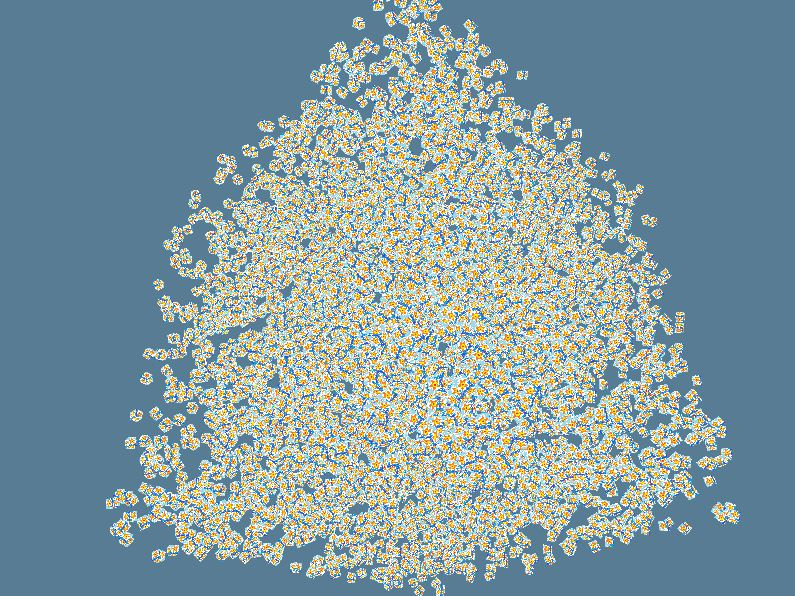
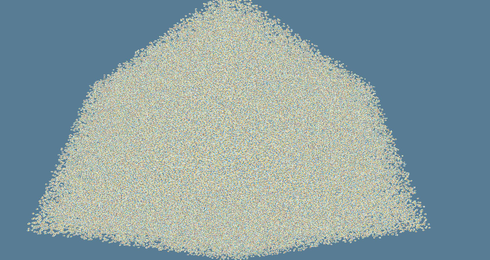

A new author!
Introducing a new, star, guest author, @termhn! She's been helping our main man Lokathor with the previous lessons, but this time is hopping in to write the lesson for real. Woo!
Instanced Drawing
So, now that we have a few cubes on the screen, what could be a more logical step than drawing many, many more cubes on the screen?! Well, the naive way to do this would be to just issue many more draw calls, and indeed, since we are using push constants to change the transformations, this would work. However, once you get to a few thousand objects, this would start to slow down quite a bit, even for something as simple as a textured cube, especially on less powerful desktop and mobile GPUs. This is less of a problem when using one of Vulkan/DX12/Metal than it was in the past with OpenGL, but it can still bog down from many draw calls.
The solution to this problem is something called instanced drawing. Whenever we've made a draw call, we've passed two ranges, one for vertices and one for instances. Until this point, we've sort of glossed over what this "instances" argument means, but that changes now!
As you know, the Vertex Shader is run for every one of the vertexes in the bound vertex buffer(s). The data from the vertex buffer gets sent in to "attributes" in the shader and this data changes for each vertex based on the stride that we told it when creating our pipeline. What we also gave it was a "rate," but we also sort of glossed over this in the past. We have been inputting a "rate" of 0, which means that the data in this vertex buffer should advance for every vertex. However, if we input a rate of 1, then we are telling it that the data in this buffer should advance only every instance.
For example, if we do a draw call over 50 vertices and 5 instances, it will repeat all 50 vertices 5 times. Each "rate 0" vertex buffer advances once per vertex and resets to the start for the next instance. Each "rate 1" vertex buffer will stay the same across a whole instance and then advance once in between instances.
Basically, we can get data which stays the same between each instance of an object. This can often be super useful, as we'll explore in this tutorial!
It's also possible to use a rate of more than 1. In this case,
the rate determines the number of instanes which will be skipped
before the data is advanced. For example, for a rate of 2, the
data will be advanced every other instance instead of every
instance. This feature is supported by default on DX12 and Metal,
but it is gated behind an extension in Vulkan and the gfx-hal
Vulkan backend does not currently support it. However, work
is being done to
rememdy this.
A maximum number of instances
As we'll soon discover, using this method does come with some limitations. One of them is that we'll need to know ahead of time the maximum number of instances we want to be able to draw, and we'll need to allocate a buffer big enough to fit all the data for those maximum number of instances. Luckily, our per-instance data is relatively small, so it's not too big a deal.
For now, we'll just choose an arbitrary but fairly large number like
- Just above where we have our vertex shader source, we'll put
# #![allow(unused_variables)] #fn main() { pub const MAX_CUBES: usize = 5000; #}
Modifying the shader
Okay, so the next thing we'll do is modify our vertex shader a little bit. The first thing we'll do is change our push constant block slightly. Instead of passing in a fully precomputed model-view-projection matrix all in one, we're now going to precompute the view-projection matrix in our push constants and then pass in a new model matrix per instance and combine the two in the vertex shader.
layout (push_constant) uniform PushConsts {
mat4 view_proj;
} push;
Next, we're going to add four new vertex attributes. We need four
because each attribute location can only store up to a maximum of a
vec4 of data, and we want to pass in a mat4 instead. Actually, in
theory, the Vulkan spec supports just defining one attribute at the
first of the four locations with type mat4 and it will automatically
fetch the data from the next four attribute locations, but this isn't
yet translated properly to dx12, so we'll hold off on that for now.
So, just below our position and vert_uv input attributes, we'll add
layout (location = 2) in vec4 model_col1;
layout (location = 3) in vec4 model_col2;
layout (location = 4) in vec4 model_col3;
layout (location = 5) in vec4 model_col4;
And finally update the actual calculation to use this new setup like so
void main()
{
mat4 model = mat4(
model_col1,
model_col2,
model_col3,
model_col4);
gl_Position = push.view_proj * model * vec4(position, 1.0);
frag_uv = vert_uv;
}
Okay, that's all we need to do in the shaders!
Adding instance buffers to HalState
The next thing we need to do is add a new piece of HalState which
we'll call cube_instances
# #![allow(unused_variables)] #fn main() { pub struct HalState { //... cube_instances: Vec<BufferBundle<back::Backend, back::Device>>, //... } #}
The reason we want a Vec of BufferBundles is because we are
actually going to use not just one instance buffer, but one instance
buffer per frame in flight. The reason we do this is so that we can
guarantee that we are not attempting to write new data into the buffer
to update the transformations of the cubes while another frame is
trying to read from that data on the GPU.
Next we'll actually create those buffers in HalState's new, just
below where we create and upload to the index buffer:
# #![allow(unused_variables)] #fn main() { let mut cube_instances = Vec::new(); for _ in 0..frames_in_flight { cube_instances.push(BufferBundle::new( &adapter, &device, size_of::<f32>() * 16 * MAX_CUBES, BufferUsage::VERTEX, )?); } #}
Note that the size is 16 f32s (the size of a 4x4 matrix) times the
max number of cubes we defined earlier, and that the usage is
VERTEX. Also note that our BufferBundle already by default and
only (for now) supports creating a CPU_VISIBLE buffer. This is
usually what you want for an instance buffer, as you'll be wanting to
write data to it frequently. However, we'll also want to transition to
using to DEVICE_LOCAL memory for most of our normal vertex buffers,
which will likely not be changed and therefore are much better off
living in the high speed, on-device memory.
Oh, and don't forget to clean them up either! Right after we clean up the other cube vertex and index buffers,
# #![allow(unused_variables)] #fn main() { for buf in self.cube_instances.drain(..) { buf.manually_drop(self.device.deref()); } #}
Adding new vertex buffer and attributes to pipeline
The next thing we'll do is modify our pipeline to add another vertex buffer and our four new vertex attributes.
In the create_pipeline function, we'll modify the creation of the
vertex_buffers to add a second one
# #![allow(unused_variables)] #fn main() { let vertex_buffers: Vec<VertexBufferDesc> = vec![ VertexBufferDesc { binding: 0, stride: size_of::<Vertex>() as ElemStride, rate: 0, }, // Add another vertex buffer with stride of a 4x4 matrix and rate 1 // meaning it advances once per instance rather than per vertex VertexBufferDesc { binding: 1, stride: (size_of::<f32>() * 16) as ElemStride, rate: 1, } ]; #}
And add four new attributes to attributes
# #![allow(unused_variables)] #fn main() { let mut attributes: Vec<AttributeDesc> = Vertex::attributes(); // We need 4 new attributes, one for each column of the matrix we want to put in. for i in 0..4 { attributes.push(AttributeDesc { location: 2 + i, binding: 1, element: Element { format: Format::Rgba32Float, offset: i * 16, }, }); } #}
Note the binding which matches the VertexBufferDesc above it,
as well as the locations which match with what we added to
our shaders. Also be careful to use the correct format and
offsets into each stride in the buffer.
Uploading data and drawing it
Now we'll drop all the way down to draw_cubes_frame. The first thing
we'll do is get a mutable reference to the corresponding instance
buffer just after we wait on the acquire'd image's previous
submission fence.
# #![allow(unused_variables)] #fn main() { let cube_instance_buf = &mut self.cube_instances[i_usize]; #}
Next we'll write the instance data into the instance buffer for each cube which we are passed in, up to the max number of cubes. This process is pretty similar to other writing we've done to CPU visible buffers in the past.
# #![allow(unused_variables)] #fn main() { // Since we just waited for the previous submission's fence we know we can write data to the buffer // We write each model matrix given (up to a max of MAX_CUBES because that's what we allocated space for) unsafe { let mut data_target = self.device .acquire_mapping_writer(&cube_instance_buf.memory, 0..cube_instance_buf.requirements.size) .map_err(|_| "Failed to acquire an instance buffer mapping writer!")?; let stride = 16; // 16 floats = one 4x4 matrix for i in 0..models.len().min(MAX_CUBES) { data_target[i*stride..(i+1)*stride].copy_from_slice(&models[i].data); } self.device .release_mapping_writer(data_target) .map_err(|_| "Couldn't release an instance buffer mapping writer!")?; } #}
Next, we'll modify our command recording. First, we'll take out the
loop that previously existed so we only have one each of the
push_graphics_constants and draw_indexed commands. We'll also
change our push_graphics_constants to only pass in the
view_projection matrix, and delete the old math that calculated
the full MVP matrix.
# #![allow(unused_variables)] #fn main() { encoder.push_graphics_constants( &self.pipeline_layout, ShaderStageFlags::VERTEX, 0, cast_slice::<f32, u32>(&view_projection.data) .expect("this cast never fails for same-aligned same-size data"), ); #}
And finally, change our draw call to draw the correct number of vertices and instances.
# #![allow(unused_variables)] #fn main() { encoder.draw_indexed(0..36, 0, 0..models.len().min(MAX_CUBES) as u32); #}
Done! ... Almost
Okay! Now if you start it, you should see... the same thing as the
last lesson! Okay, well... nice, but we wanted more cubes! Alright,
well, to do that we'll bring in the rand crate and spice up our
cube generation just a little bit.
Getting Random
First in our Cargo.toml
rand = "0.6"
Then, near the top of our rust file,
# #![allow(unused_variables)] #fn main() { use rand::prelude::*; #}
Next, we'll change the "physics" rotation code a bit, as it gets... really fast when you increase the number of cubes being shown.
# #![allow(unused_variables)] #fn main() { let r = ONE_SIXTIETH * 30.0 * (i as f32 + 1.0) / MAX_CUBES as f32; #}
Next, we'll change our cube generation code a bit. Instead of
manually defining 6 cubes, we'll generate cubes up to our defined
MAX_CUBES and distribute them randomly into an area proportionate
to the number of them.
# #![allow(unused_variables)] #fn main() { let mut cubes = Vec::with_capacity(MAX_CUBES); let mut rng = rand::thread_rng(); for _ in 0..MAX_CUBES { let scaling = (MAX_CUBES as f32).cbrt() * 3.0; let rand_vec = glm::vec3(rng.gen::<f32>(), rng.gen::<f32>(), rng.gen::<f32>()); cubes.push(glm::translation(&(scaling * rand_vec))); } LocalState { //... cubes, //... } #}
You'll notice that the area we're distributing the cubes into is a
cube with each side as cbrt(MAX_CUBES) * 3.0. This means that, on
average, since each cube is one unit in size, there will be one cube
distributed every 3 units. Feel free to play around with the scalar
multiplication if you want a tighter or more spread distribution.
Change the projection matrix
Finally, we'll need to change the perspective matrix a bit to make the 'far' plane further away, or else we'll lose some cubes off the far clipping plane!
# #![allow(unused_variables)] #fn main() { let mut temp = glm::perspective_lh_zo(800.0 / 600.0, f32::to_radians(50.0), 0.1, 1000.0); #}
Now you should get something like this

Which, okay, that's cool, but how high can we go?! I've had success with 200,000 cubes on my own machine, but you might be able to go higher!

Yeah, that's a lot of cubes...
As always, this example's code can be viewed in the examples directory.